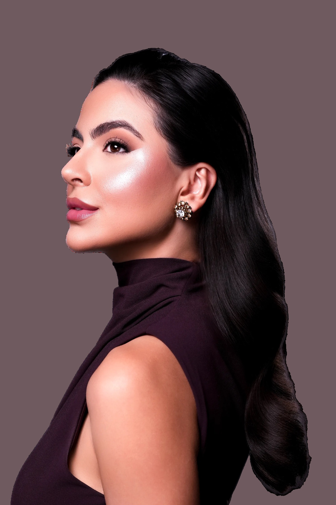
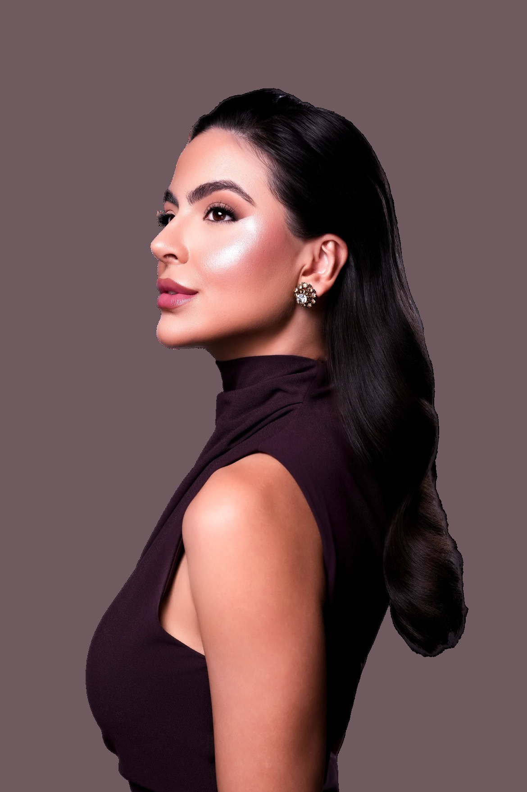

Aprenda a preencher olheiras com segurança, uma das áreas mais delicadas da face.
Uma imersão completa em preenchimento periorbital para dominar a avaliação e o planejamento de cada caso com segurança e embasamento científico.
Aprenda a identificar os tipos de olheiras, escolher os produtos e as quantidades ideais e reconhecer precocemente possíveis intercorrências.
Mais conhecimento, segurança e previsibilidade nos seus resultados.
Domine a técnica para esculpir olheiras como essas:
 Antes
Antes Depois
Depois Antes
Antes Depois
Depois Antes
Antes Depois
Depois Antes
Antes Depois
Depois Antes
Antes Depois
Depois Antes
Antes Depois
Depois+4.000
preenchimentos de olheiras.
+3.000
profissionais já formados por ela nos cursos Natural Face, Natural Lips, Natural Nose e Natural Eyes.
Uma biomédica que preenche a região das olheiras todos os dias ensinando você a fazer o mesmo.
Por que até quem é experiente evita a região
Uma das maiores queixas no consultório é o semblante cansado, e as olheiras profundas são grandes responsáveis por isso.
Mas por medo de bolsas, efeito Tyndall e intercorrências, muitas profissionais ainda evitam essa região.
A maioria dos cursos ensina a aplicar. No Natural Eyes, você vai aprender a pensar clinicamente cada olheira, porque o segredo não está apenas em saber preencher, mas em saber como, quando e por que preencher.
O que você sai sabendo fazer
- 01
Identificar o tipo de olheira e a conduta para cada uma.
- 02
Dominar a anatomia:
entenda a vascularização, as estruturas que sustentam a região dos olhos, as mudanças provocadas pelo envelhecimento e os planos anatômicos mais adequados para depositar o preenchimento.
- 03
Escolha dos produtos ideais:
aprenda a selecionar o preenchedor adequado para cada região dos olhos, respeitando suas características para alcançar resultados naturais, sem excessos ou aspecto artificial.
- 04
Prevenção e manejo de intercorrências:
aprenda a minimizar riscos, reconhecer sinais de alerta e agir de forma rápida e assertiva caso uma intercorrência aconteça.
Os módulos
- 01
Anatomia da região dos olhos
Estrutura óssea + tecidos fibrosos conjuntivos + gordura facial + gordura infraorbital + formação das bolsas de gordura + camadas anatômicas da região + classificação dos tipos de olheiras
- 02
Os tipos de olheiras
Todos os tipos de olheiras e como tratá-las
- 03
Material preenchedor
Produto, densidade e quantidade por região.
- 04
Intercorrências
Todo bom injetor sabe que não basta prevenir uma intercorrência: é preciso saber reconhecê-la e agir com rapidez e conhecimento para manejá-la caso aconteça.
Quem é a Luisa
Luisa Brum é biomédica, com certificação internacional por Harvard e pelo Miami Dental Institute. Ela dá aula de full face, é CEO do Instituto Brum e preenche a região dos olhos diariamente na clínica.
Eu também já tive medo de preencher olheiras.
Quando eu trabalhava como CLT, a região dos olhos era uma das que mais me desafiavam. Eu tinha medo de preencher pacientes com bolsas de gordura, flacidez avançada e acabar provocando ainda mais volume, um resultado artificial ou intercorrências. E, muitas vezes, os resultados não eram como eu gostaria.
Mas eu não queria continuar evitando uma região tão importante para o rejuvenescimento facial. Eu queria entender, de verdade, o que fazia algumas olheiras responderem tão bem ao preenchimento, enquanto outras se tornavam um grande desafio.
Foi então que mergulhei no estudo da anatomia, participei de diversos treinamentos em cadáveres fresh frozen e me aprofundei nas estruturas e no processo de envelhecimento da região periorbital. Essa trajetória me levou, inclusive, a ser convidada para atuar como professora em cursos de anatomia.
E foi quando deixei de enxergar as olheiras apenas como uma área a ser preenchida e passei a compreender toda a complexidade dessa região que tudo mudou.
Desse conhecimento nasceu o Natural Eyes, meu método desenvolvido para tratar a região periorbital com planejamento individualizado, respeitando a anatomia e priorizando resultados naturais, sem excesso de produto ou aquele aspecto artificial que tanto tememos.
Hoje, ensino outras profissionais a enxergarem além da olheira: a entenderem cada caso, tomarem decisões clínicas mais conscientes e tratarem essa região com muito mais conhecimento e segurança.
Porque eu sei como é sentir medo de uma região que você gostaria de dominar. E foi justamente por já ter estado nesse lugar que criei o Natural Eyes.
Eu não quero apenas ensinar você a preencher olheiras. Quero ensinar você a entender o que está fazendo, por que está fazendo e quando o preenchimento realmente é a melhor escolha.
Luisa Brum
É possível dar uma guinada na sua carreira mesmo se você:
Possui medo e insegurança para fazer preenchimento de olheiras
Não obtém satisfação dos seus clientes
Não consegue realizar um planejamento ideal com uma pequena quantidade de produto
Não tem
muita procura
Pra quem é
É pra você se:
você deseja ter reconhecimento profissional na área dos olhos na sua região.
você que deseja ter confiança para realizar o procedimento.
você que deseja ter resultados com aspectos naturais
você que deseja ter uma fila de pessoas querendo ser atendidas por você.
você que deseja proporcionar o aumento da autoestima dos seus pacientes.
O que você leva
Tudo o que entra na sua inscrição:
- Os 4 módulos da imersão
- R$ 4.497,00
- Bônus 1: Modelo de anamnese da região dos olhosPara organizar a avaliação e o registro das informações de cada paciente.
- R$ 297,00
- Bônus 2: Modelo de termo de consentimentoPara complementar a documentação dos seus atendimentos.
- R$ 197,00
- Bônus 3: Minha técnica para tratar a flacidez da região dos olhosVocê vai conhecer a técnica que utilizamos no Instituto Brum.
- R$ 1.697,00
- Bônus 4: Aula gravada em cadáver fresh frozenUma aula para aprofundar seu entendimento da anatomia, do processo de envelhecimento da região dos olhos e da técnica utilizada.
- R$ 25.000,00
- Acesso por 12 meses, quantas vezes quiser
Quanto custaria todo esse conteúdo?
TotalR$ 27.691,00
Preço: 4.497
Mas hoje você entra por 12x
R$361,67
ou R$3.497 à vista
Um preenchimento de olheira custa em média R$2.000. Com 3 pacientes, o curso está pago.
Você tem 7 dias pra entrar, assistir e ver se a imersão entrega o que promete. Se não for o que você esperava, devolvemos o valor inteiro. O risco é nosso, não seu.
FAQ
Preciso já fazer harmonização?
Sim. A imersão é pra quem já aplica preenchedor e quer dominar a região dos olhos.
E se eu tiver uma intercorrência depois?
O Módulo 4 é inteiro sobre isso: como evitar e o passo a passo para reverter, além disso você terá o meu suporte por 12 meses.
Já fiz outro curso de olheira e não me senti segura. Esse é diferente?
Nessa imersão, você vai enxergar a região dos olhos como NUNCA viu antes! Vai dominar o meu raciocínio clínico, entender de VERDADE a complexidade dessa região e aprender a tomar decisões com muito mais segurança. Porque o Natural Eyes vai muito além de ensinar uma técnica: vai mudar a forma como você enxerga e trata cada olheira.
É teórico ou prático?
Você vai dominar a teoria e, em seguida, acompanhar toda a prática em pacientes reais: jovens, idosos, com flacidez avançada e bolsas de gordura. Vai entender como eu avalio, planejo e conduzo cada caso, para desenvolver seu raciocínio clínico e se sentir muito mais preparada para os desafios que chegam ao consultório.
Tem certificado?
Sim, após concluir todas as aulas o seu certificado fica disponível para impressão.
Quanto tempo tenho de acesso?
12 meses de acesso às aulas e de suporte comigo e com a minha equipe.
Como pago?
No pix, no cartão, utilizando dois cartões e podendo ser pago no pix e cartão juntos.
E se eu não gostar?
Você tem 7 dias de garantia. Entra, assiste e, se não for pra você, devolvemos tudo.


Você tem duas escolhas.
- 01
Continuar recusando o preenchimento de olheiras e vendo essas pacientes fecharem com outra profissional.
- 02
Ou aprender a dominar essa região e entregar resultados impecáveis e ser referência no assunto.
A fila de pacientes já existe.
Falta decidir quem vai atender.